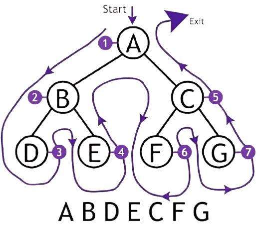
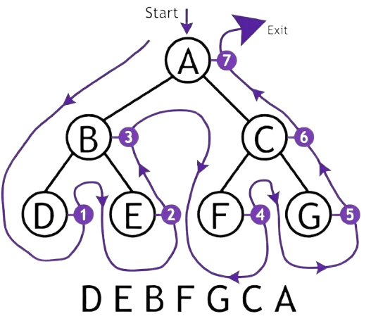

Tree Traversals Tree Algorithms
What is Tree Traversal?
Imagine reading every page of a book — but the order you read them matters. Traversal is how we process all the data stored in a tree. Since a tree is not linear like an array, we need a defined strategy to visit every node without missing or revisiting any.
Traversal helps us print tree data, search for values, copy a tree, evaluate expressions, and much more. The three core traversal strategies — Inorder, Preorder, and Postorder — are all recursive and differ only in when the root is visited relative to its subtrees.
Why Traversal Order Matters
Same tree, different orders — different outputs. Traversal order isn't just academic; it directly determines what you get out of a tree and how you can use it. Here's why the choice matters in practice:
Expression Evaluation
Postorder traversal evaluates expression trees correctly — operands are processed before their operator, giving the right computed result.
Sorted Output (BST)
Inorder traversal on a Binary Search Tree prints all values in ascending sorted order — an elegant property used in sorting algorithms.
Printing Hierarchy
Preorder traversal visits the root before its children — perfect for printing or copying a tree while preserving its top-down structure.
Inorder Traversal
In Inorder traversal, you visit the left subtree first, then the root, then the right subtree. The process repeats recursively for every node.
Preorder Traversal
In Preorder traversal, the root is visited first, before going into either subtree. This makes it ideal for copying a tree or serializing its structure, because every parent is recorded before its children.

Postorder Traversal
In Postorder traversal, the root is visited last. Both subtrees are fully processed before the root node is touched. This makes it ideal for deleting a tree (delete children before parent) and evaluating expression trees.

Implementation in C
All three traversals are implemented as recursive functions. Each function takes a pointer to the root node and recursively calls itself on the left and right subtrees. The only difference between them is the position of the print statement — before, between, or after the recursive calls.
#include<stdio.h>
#include<stdlib.h>
struct node {
int data;
struct node* left;
struct node* right;
};
struct node* create() {
int x;
printf("Enter data (-1 for NULL): ");
scanf("%d", &x);
if (x == -1) return NULL;
struct node* newnode = malloc(sizeof(struct node));
newnode->data = x;
newnode->left = create();
newnode->right = create();
return newnode;
}
/* Inorder: Left → Root → Right */
void inorder(struct node* root) {
if (root == NULL) return;
inorder(root->left);
printf("%d ", root->data);
inorder(root->right);
}
/* Preorder: Root → Left → Right */
void preorder(struct node* root) {
if (root == NULL) return;
printf("%d ", root->data);
preorder(root->left);
preorder(root->right);
}
/* Postorder: Left → Right → Root */
void postorder(struct node* root) {
if (root == NULL) return;
postorder(root->left);
postorder(root->right);
printf("%d ", root->data);
}
int main() {
struct node* root = create();
printf("\nInorder: "); inorder(root);
printf("\nPreorder: "); preorder(root);
printf("\nPostorder: "); postorder(root);
return 0;
}
printf is placed — before both calls (preorder), between them (inorder), or after both calls (postorder). That single change controls the entire visit order.